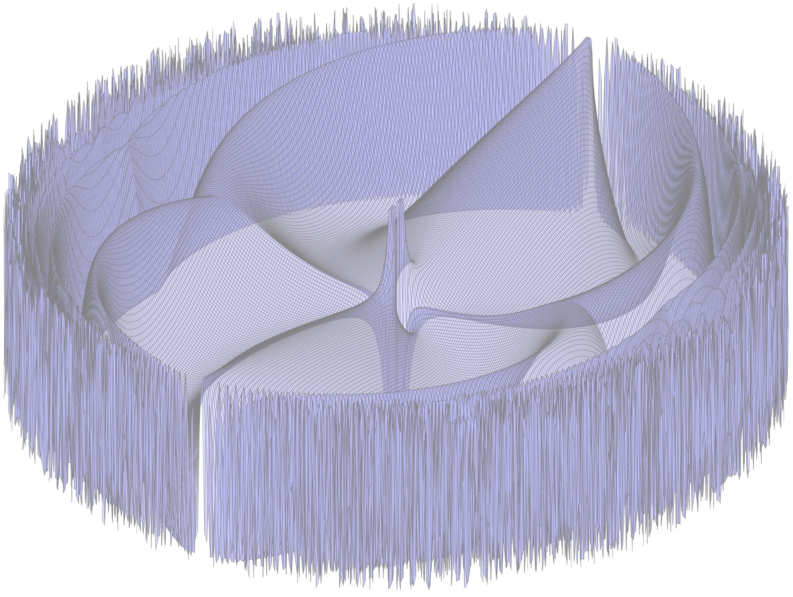

[ Levinson Fellow ]
AB/AM in Mathematics from Harvard (2023 Summa Cum Laude)
[ Recipient of the Mumford Prize and Friends Prize ]
Email: benjyfir at mit dot edu
Benjy Firester
Math PhD student at MIT advised by Toby Colding and Tristan Collins
[
AB/AM in Mathematics from Harvard (2023 Summa Cum Laude)
[
Email: benjyfir at mit dot edu

Research
- Uniqueness of Cylindrical Tangent Cones Cp, q × ℝ (with R. Tsiamis and Y. Wang)
[ arXiv ]
- Cohomogeneity two Ricci solitons with sub-Euclidean volume (with R. Tsiamis)
[ arXiv ]
- Complete Calabi-Yau metrics from smoothing Calabi-Yau complete intersections
[ arXiv ][ Journal ] Geom. Dedicata (2024) 218:46
- Impact Hamiltonian systems and polygonal billiards (with L. Becker, S. Elliott, S. Gonen Cohen, M. Pnueli, V. Rom-Kedar)
[ arXiv ][ Journal ] Hamiltonian Systems: Dynamics, Analysis, Applications. Mathematical Sciences Research Institute Publications. Cambridge University Press; 2024:29-66.
Expository
- Senior Thesis: Mostow Rigidity and Hyperbolic 3-Manifolds (advised by Curt McMullen)
Recipient of the Hoopes Prize and the Friends Prize
[ PDF ]
Presentations
- Sapienza Università di Roma Calculus of Variations and PDE's in Geometric Analysis
[ January 22, 2025 ]
- Hebrew University in Jerusalem Geometry and Topology Seminar
[ January 16, 2025 ]
- Technion University PDE and Applied Mathematics Seminar
[ January 14, 2025 ]
- University of Granada Seminario de geometría
[ July 8, 2024 ]
- Harvard Special Lecture for Friends Prize Recipient
[ April 28, 2023 ]
- Harvard Math Table
[ March 29, 2023 ]
- Stanford Special Geometry Seminar
[ February 23, 2023 ]
- Joint Mathematics Meeting 2023: AMS Contributed Paper Session in Geometry
[ January 5, 2023 ]
- RTG Partial Differential Equations on Manifolds: Undergraduate Analysis and PDE Seminar (with T. C. Collins)
[ November 18, 2022 ]
- Hebrew University in Jerusalem Geometry and Topology Seminar
Teaching
- Harvard Math 123: Algebra II (Rings, Fields, Galois theory) taught by Curt McMullen
[ Spring 2023 Course Assistant ]
- Harvard Math 101: Sets, Groups, and Knots taught by Curt McMullen
[ Fall 2022 Course Assistant ]
- Harvard Math 123: Algebra II (Rings, Fields, Galois theory) taught by Mark Kisin
[ Spring 2022 Course Assistant ]
- Harvard Math 114: Measure, Integration, Banach Spaces, Duality, and Fourier analysis taught by Dennis Gaitsgory
[ Fall 2021 Course Assistant ]
- Harvard Math 55b: Topology and Real/Complex analysis taught by Joe Harris
[ Spring 2020 Course Assistant ]
- Harvard Math 55a: Algebra (Group theory, linear algebra, representation theory) taught by Joe Harris
[ Fall 2019 Course Assistant ]
CV
- CV (last updated January 2025)
Community
- I am a UROP mentor.
- I am a PRIMES mentor.
- I am a GUMMI mentor.
- I am a tutor for Winthrop house.